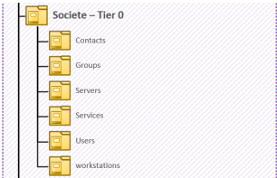
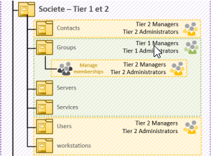
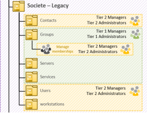
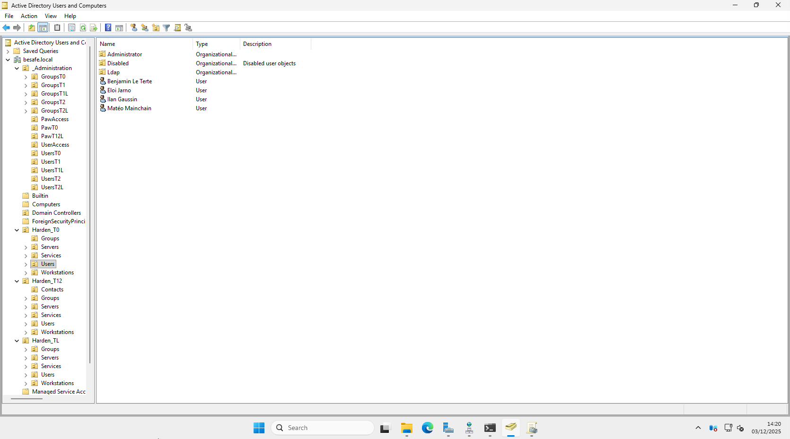
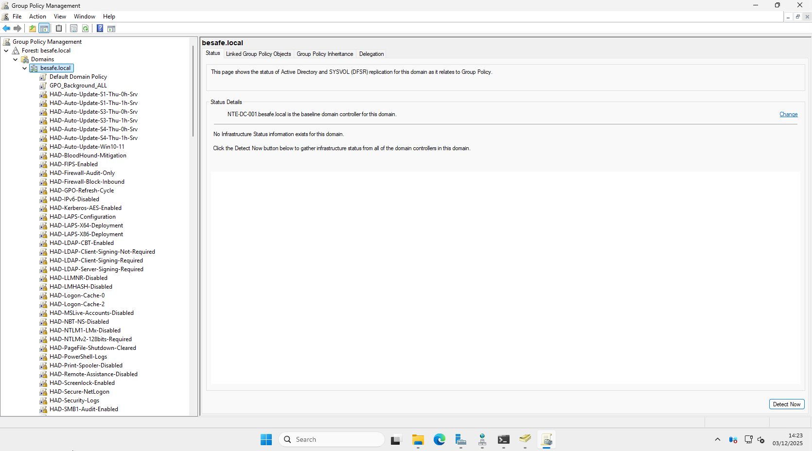

🛡️ Active Directory – Projet BESAFE
Cette page présente l’architecture logique d’Active Directory, ainsi que les principes de sécurité et de tiering.
⚙️ Détails techniques
| Élément | Valeur (BESAFE) |
|---|---|
| Forêt | besafe.local |
| Nombre de domaines | 1 (forêt mono-domaine) |
| Rôle principal | Annuaire d’authentification et d’autorisation |
| Services AD associés | AD DS, DNS, DHCP |
| Sécurité | Modèle HardenAD + Tiering + durcissement GPO |
| Référentiels | HardenAD, Microsoft Tiering Model |
🧩 Vue d’ensemble de l’architecture

- Forêt :
besafe.local - Domaine :
besafe.local - Contrôleurs de domaine : 2 DC recommandés (redondance, haute dispo)
- DNS : zones intégrées AD, sécurisées
- Modèle de sécurité :
- Tiering T0 / T12 / TL
- Durcissement GPO (HardenAD)
🏛️ 1. Modèle de tiering (T0 / T12 / TL)
🎯 Objectif du tiering
Limiter l’impact d’un compte compromis en segmentant les privilèges :
- Tier 0 (T0) : identité & infrastructure critiques
- Tier 1–2 (T12) : serveurs / workloads IT
- Tier L (Legacy) : tout ce qui ne respecte pas encore les standards (héritage, exceptions, à retraiter)
📚 Modèle BESAFE
| Tier | Périmètre | Exemples BESAFE | Règles principales |
|---|---|---|---|
| T0 | Contrôle de l’annuaire & de la PKI | DC, PKI, comptes d’admin domaine/entreprise | Accès uniquement depuis postes T0, MFA, bastion |
| T12 | Serveurs & services d’infra / applicatifs | vCenter, serveurs Windows/Linux, hyperviseurs, appliances | Admins T12, pas d’accès direct aux objets T0 |
| TL | Legacy / exceptions | vieux serveurs, comptes techniques historiques | À traiter : migration, réduction des privilèges |
🧱 Concrétisation dans AD
- Séparation des comptes :
- Un compte utilisateur personnel (Tier 2)
- Un ou plusieurs comptes admin dédiés (T0 / T12)
- Jamais de connexion Tier 0 sur :
- Postes utilisateurs
- Serveurs applicatifs
- VMs non dédiées T0
🎯 Objectif final : un compte compromis en T12 ou TL ne permet pas de remonter facilement vers T0.
🗂️ 2. Structure des OU
🧱 Principes de design
- Pas d’objets directement dans la racine du domaine (hors conteneurs système)
- Tout objet administré est placé dans une OU dédiée, avec:
- GPO adaptées
- Droits d’administration délégués (si besoin)
🧬 Arborescence logique (exemple BESAFE)
besafe.local
├── _Administration
├── Harden_T0
├── Harden_T12
├── Harden_TL
├── Computers
├── Domain Controllers
├── Managed Service Accounts
├── Provisioning
└── Users




🔐 Cette structure permet d’appliquer des GPO différentes par tier, tout en gardant une vision claire de l’appartenance de chaque objet.
👥 3. Comptes & groupes administratifs
🔑 Séparation des comptes
- 1 compte utilisateur standard par admin
(ex :prenom.nom) - 1 compte admin T12
(ex :admin.prenom) - 1 compte admin T0 si nécessaire
(ex :t0.admin.prenom.)
👉 Aucun compte admin ne doit servir à :
- Naviguer sur Internet
- Lire la messagerie
- Se connecter sur un poste non lié à son Tier
- Effectuer des tâches bureautiques
👥 Groupes d’administration
| Groupe | Rôle | Tier |
|---|---|---|
| BESAFE-T0-Admins | Admin DC, PKI, configuration globale | T0 |
| BESAFE-T12-ServerAdmins | Admin serveurs membres (Windows / Linux) | T12 |
| BESAFE-Helpdesk | Support N1/N2 (reset password, join domain…) | T12 / TL |
🔗 Les groupes sont ensuite mappés :
- soit aux rôles intégrés (Domain Admins, Server Operators, Account Operators…)
- soit utilisés pour une délégation fine (OU spécifique, droits limités).
🚫 Ce qui est proscrit
- ❌ Utiliser le compte Administrator comme compte d’administration principal
- ❌ Créer des comptes de service avec droits Domain Admin
🎯 Objectif
Limiter la surface d’attaque et assurer une administration lisible, segmentée et sécurisée.
🧷 4. GPO & durcissement (vue d’ensemble)
🧬 Architecture GPO (exemple)
| Type de GPO | Liée à | Objectif principal |
|---|---|---|
| GPO_Harden_T0 | OU Harden_T0 + DC | Hardening DC / PKI / Tier0 |
| GPO_Harden_T12_Servers | OU Harden_T12 | Durcissement serveurs membres |
| GPO_Harden_TL | OU Harden_TL | Confinement / restrictions legacy |
| GPO_Users_Security | OU Users | Hardening sessions utilisateurs |
| GPO_Workstations | OU Computers | Sécurité OS, pare-feu, BitLocker |
| GPO_AdminLogonRestrictions | _Administration | Restrictions de logon des admins |
🔐 Exemples de paramètres issus d’HardenAD / bonnes pratiques
🔒 Désactivation des protocoles obsolètes
- SMBv1
- NTLMv1
- LM Hash
🔒 Renforcement Kerberos
- AES requis
- Durées de tickets maîtrisées
- Interdiction des préauths faibles
📜 Journalisation avancée
- Logon / Logoff
- Changements d’objets sensibles
- Modifications de groupes à privilèges
🖥️ Paramètres RDP
- NLA obligatoire
- ❌ Interdit sur DC (sauf bastion / PAM)
📌 Le détail complet repose sur les baselines HardenAD + recommandations Microsoft.

✅ Résumé global
| Étape | Thème | Objectif | Résultat attendu |
|---|---|---|---|
| 1️⃣ | Modèle de tiering | Segmenter les privilèges (T0 / T12 / TL) | Impact minimal en cas de compromission |
| 2️⃣ | Structure d’OU | Organiser l’AD proprement | Application claire des GPO |
| 3️⃣ | Comptes / groupes admin | Séparer usage & admin | Principe du moindre privilège |
| 4️⃣ | GPO & hardening | Baselines de sécurité | Réduction du risque AD |
🔗 Liens utiles
- ANSSI - https://cyber.gouv.fr/publications/recommandations-pour-ladministration-securisee-des-si-reposant-sur-ad
- Microsoft – https://learn.microsoft.com/en-us/security/privileged-access-workstations/privileged-access-access-model
- HardenAD – https://github.com/LoicVeirman/HardenAD
- HardenAD – https://hardenad.net